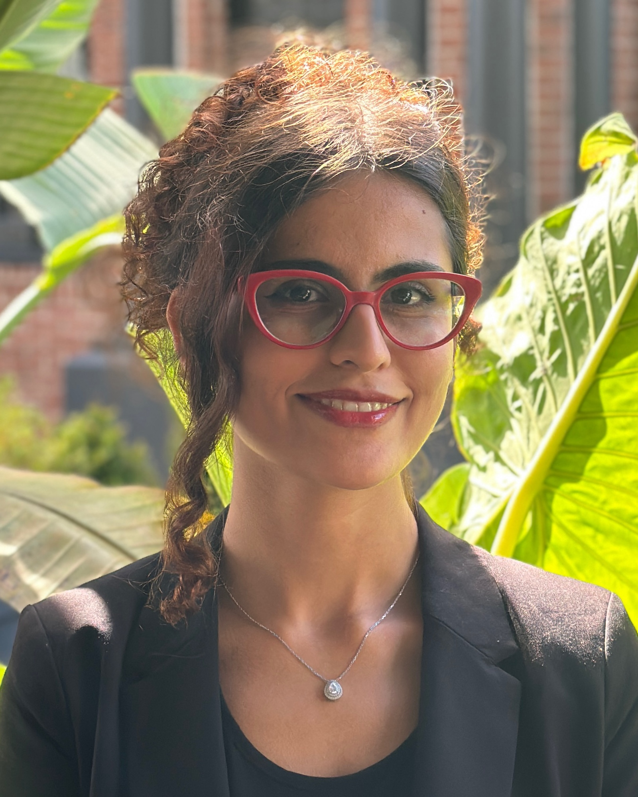
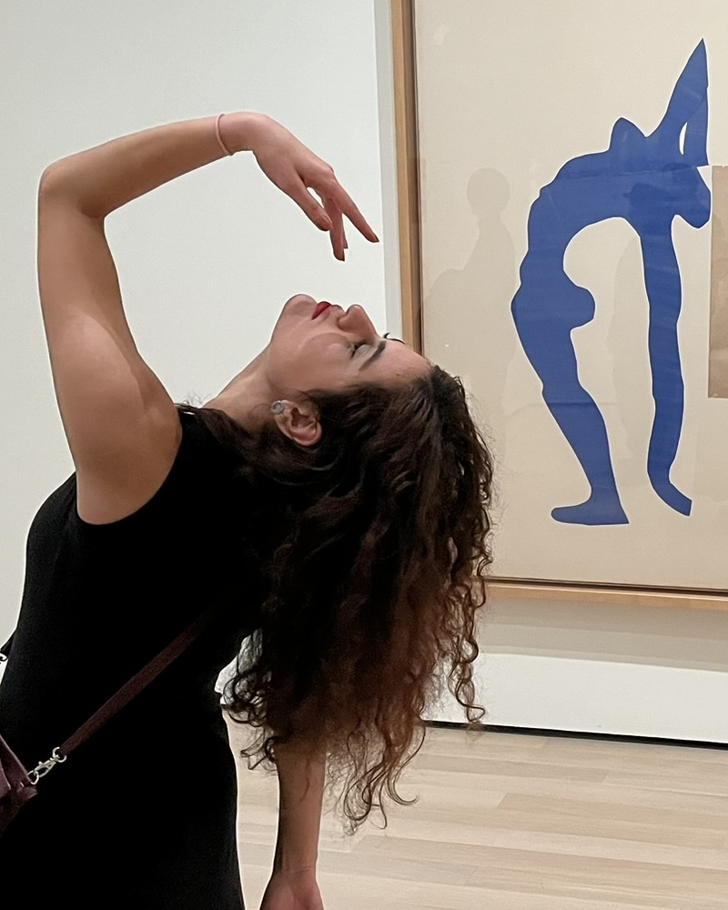

2025


I build virtual agents with rich human-like behaviors.
I'm a PhD candidate at the Khoury College of Computer Sciences at Northeastern University, where I work with Prof. Stacy Marsella in the CESAR Lab. My research focuses on generating multimodal behavior for embodied virtual agents, generating rich nonverbal behaviors (gaze, gestures, facial expresion, etc) that are appropriate to the role of the virtual agent and the context of the interaction between the agent and the human .
Recently I've been using large language models as semantic selectors, selecting appropriate behaviors that the agent should perform during an interaction with the user.
Outside of work, I like to dance, embodying emotions by taking forms and motions.
I'm always glad to hear from people working on gestures, nonverbal behavior, or designing and deploying virtual agents in different applications.
Research interests
- Multimodal behavior generation
- Embodied conversational agents
- Co-speech gesture
- Nonverbal communication
- Large language models
- Human-agent interaction
Publications
* equal contribution2025
Best Student Paper Award at AAMAS 2025
Large Language Models for Virtual Human Gesture Selection
2024
Towards an Intelligent Augmented Reality Tutoring System for Precision Manufacturing
2023
Investigating Large Language Models' Perception of Emotion Using Appraisal Theory
2023
Large Language Models in Textual Analysis for Gesture Selection
Talks
Mar 2026
May 2025
Conference
Paper and Poster Presentation
Large Language Models for Virtual Human Gesture Selection
June 2023
Conference
Paper Presentation
Towards an Intelligent Augmented Reality Tutoring System for Precision Manufacturing
Curriculum Vitae
Updated August 2026Education
Sept 2022 — present
PhD, Computer Science · Northeastern University, Boston, MA
Advisor: Prof. Stacy Marsella
Advisor: Prof. Stacy Marsella
Sept 2022 — Apr 2025
MSc, Computer Science · Northeastern University, Boston, MA
Advisor: Prof. Stacy Marsella
Advisor: Prof. Stacy Marsella
Sept 2017 — Jan 2022
BSc, Computer Science · Amirkabir University of Technology, Tehran, Iran
Advisor: Prof. Mohammad Akbari
Advisor: Prof. Mohammad Akbari
Awards
2025
Best Student Paper Award · International Conference on Autonomous Agents and Multiagent Systems (AAMAS 2025)
Experience
Sept 2022 — present
Doctoral Researcher · CESAR Lab, Northeastern University, Boston, MA
Evaluating large language models for co-speech gesture generation, and building an end-to-end LLM-driven gesture pipeline integrated into a virtual agent framework. Annotated a speaker-specific hand-gesture dataset used for evaluation.
Evaluating large language models for co-speech gesture generation, and building an end-to-end LLM-driven gesture pipeline integrated into a virtual agent framework. Annotated a speaker-specific hand-gesture dataset used for evaluation.
June 2026 — Sept 2026
Research Engineer Intern · Elevare Health Inc., Boston, MA
Integrated a virtual human framework into a maternal health clinical AI system and developed an LLM-driven emotional expression module for the agent. Co-presented the company pitch to Pear VC, covering the virtual human architecture, design choices, and underlying research.
Integrated a virtual human framework into a maternal health clinical AI system and developed an LLM-driven emotional expression module for the agent. Co-presented the company pitch to Pear VC, covering the virtual human architecture, design choices, and underlying research.
June 2025 — Sept 2025
Research Intern · VHTL Lab, Institute for Creative Technologies, University of Southern California, Los Angeles, CA
Supervisor: Dr. Sharon Mozgai. Developed a nonverbal behavior generation pipeline deployed in a Unity virtual agent platform, and designed a human-subjects study of an AR agent for workplace training.
Supervisor: Dr. Sharon Mozgai. Developed a nonverbal behavior generation pipeline deployed in a Unity virtual agent platform, and designed a human-subjects study of an AR agent for workplace training.
Sept 2022 — Jan 2024
Research Assistant · CESAR Lab, Northeastern University, Boston, MA
Designed and ran a Wizard-of-Oz evaluation with 40 participants of an AR intelligent tutoring system for complex psychomotor tasks, with mixed-effects and qualitative analysis.
Designed and ran a Wizard-of-Oz evaluation with 40 participants of an AR intelligent tutoring system for complex psychomotor tasks, with mixed-effects and qualitative analysis.
Sept 2020 — Sept 2021
Undergraduate Researcher · Amirkabir University of Technology, Tehran, Iran
Neural networks for textual sentiment analysis; research on therapeutic chatbots.
Neural networks for textual sentiment analysis; research on therapeutic chatbots.
Teaching
Jan 2025 — May 2025
Teaching Assistant, Human-AI Interaction · Northeastern University
Rubric-based grading for ~50 students; weekly office hours supporting research projects.
Rubric-based grading for ~50 students; weekly office hours supporting research projects.
Skills
Languages
Python, R, C#
Python, R, C#
Tools & frameworks
OpenAI API, PyTorch, Hugging Face, Scikit-learn, Pandas, NumPy, Unity, Git
OpenAI API, PyTorch, Hugging Face, Scikit-learn, Pandas, NumPy, Unity, Git
AI & modeling
NLP, LLMs — prompt engineering, fine-tuning, RAG
NLP, LLMs — prompt engineering, fine-tuning, RAG
Research
Study design, statistical analysis, Qualtrics, IRB write-up
Study design, statistical analysis, Qualtrics, IRB write-up
Reviewing
2026
The European Heart Journal — Digital Health · Reviewer
2026
ACM International Conference on Multimodal Interaction (ICMI) · Reviewer
2026
International Conference on Affective Computing and Intelligent Interaction (ACII) · Reviewer
2025
Springer Nature Journal of Virtual Reality · Reviewer